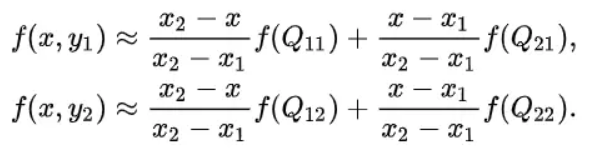

放大图像（或称为上采样（upsampling）或图像插值（interpolating））的主要目的是放大原图像,从而可以显示在更高分辨率的显示设备上。对图像的缩放操作并不能带来更多关于该图像的信息, 因此图像的质量将不可避免地受到影响。然而，确实有一些缩放方法能够增加图像的信息，从而使得缩放后的图像质量超过原图质量。常见的上采样方法有双线性插值、转置卷积、上采样（unsampling）和上池化（unpooling）。其中前两种方法较为常见，后两种用得较少。
上采样原理：图像放大几乎都是采用内插值方法，即在原有图像像素的基础上在像素点之间采用合适的插值算法插入新的元素。
1.双线性插值(bilinear)：
又称为双线性内插。在数学上，双线性插值是对线性插值在二维直角网格上的扩展，用于对双变量函数（例如 x 和 y）进行插值。其核心思想是在两个方向分别进行一次线性插值。
假设我们想得到未知函数 f 在点 P = (x, y) 的值，假设我们已知函数 f 在 Q11 = (x1, y1)、Q12 = (x1, y2), Q21 = (x2, y1) 以及 Q22 = (x2, y2) 四个点的值。
首先在 x 方向进行线性插值，得到:

然后在 y 方向进行线性插值，得到 f(x, y):

在FCN中上采样用的就是双线性插值。
2.转置卷积(Transposed Convolution)：
在上面的双线性插值方法中不需要学习任何参数。而转置卷积就像卷积一样需要学习参数
转置卷积(Transposed Convolution)常常在一些文献中也称之为反卷积(Deconvolution)和部分跨越卷积(Fractionally-strided Convolution)，因为称之为反卷积容易让人以为和数字信号处理中反卷积混起来，造成不必要的误解，因此下文都将称为转置卷积，并且建议各位不要采用反卷积这个称呼。
转置卷积是一种特殊的正向卷积，先按照一定的比例通过补  来扩大输入图像的尺寸，接着旋转卷积核，再进行正向卷积。
来扩大输入图像的尺寸，接着旋转卷积核，再进行正向卷积。
如果我们想要我们的网络可以学习到最好地上采样的方法，我们这个时候就可以采用转置卷积。这个方法不会使用预先定义的插值方法，它具有可以学习的参数。理解转置卷积这个概念是很重要的，因为它在若干重要的文献中都有所应用，如：
- 在DCGAN中的生成器将会用随机值转变为一个全尺寸(full-size)的图片，这个时候就需要用到转置卷积。
- 在语义分割中，会使用卷积层在编码器中进行特征提取，然后在解码层中进行恢复为原先的尺寸，这样才可以对原来图像的每个像素都进行分类。这个过程同样需要用到转置卷积。
并且我们将会从一个小例子中直观的感受卷积操作。假设我们有一个4×4的矩阵，我们将在这个矩阵上应用3×3的卷积核，并且不添加任何填充(padding)，步进参数(stride)设置为1，就像下图所示，输出为一个2×2的矩阵。

这个卷积操作在输入矩阵和卷积核中，对每个元素的乘积进行相加。因为我们没有任何填充和使用1为步进，因此我们只能对这个操作进行4次，因此我们的输出矩阵尺寸为2×2。

这种卷积操作使得输入值和输出值之间存在有位置上的连接关系，举例来说，输入矩阵左上方的值将会影响到输出矩阵的左上方的值。更具体而言，3×3的卷积核是用来连接输入矩阵中的9个值，并且将其转变为输出矩阵的一个值的。一个卷积操作是一个多对一(many-to-one)的映射关系。让我们记住这个，我们接下来将会用得着。
让我们反过来操作吧：
现在，假设我们想要反过来操作。我们想要将输入矩阵中的一个值映射到输出矩阵的9个值，这将是一个一对多(one-to-many)的映射关系。这个就像是卷积操作的反操作，其核心观点就是用转置卷积。举个例子，我们对一个2×2的矩阵进行上采样为4×4的矩阵。这个操作将会维护一个1对应9的映射关系。

因此就结论而言，卷积操作是多对一，而转置卷积操作是一对多，如下图所示，每一个“对”而言，都需要维护一个权值。

但是我们将如何具体操作呢？为了接下来的讨论，我们需要定义一个卷积矩阵(convolution matrix)和相应的转置卷积矩阵(transposed convolution matrix)。
卷积矩阵：
我们可以将一个卷积操作用一个矩阵表示。这个表示很简单，无非就是将卷积核重新排列到我们可以用普通的矩阵乘法进行矩阵卷积操作。如下图就是原始的卷积核：

我们将3x3内核重新排列为4x16矩阵，如下所示：


这个便是卷积矩阵了，这个矩阵的每一行都定义了一个卷积操作。下图将会更加直观地告诉你这个重排列是怎么进行的。每一个卷积矩阵的行都是通过重新排列卷积核的元素，并且添加0补充(zero padding)进行的。

为了将卷积操作表示为卷积矩阵和输入矩阵的向量乘法，我们将输入矩阵4×4摊平(flatten)为一个列向量，形状为16×1，如下图所示。

我们可以将这个4×16的卷积矩阵和1×16的输入列向量进行矩阵乘法，这样我们就得到了输出列向量。

这个输出的4×1的矩阵可以重新塑性为一个2×2的矩阵，而这个矩阵正是和我们一开始通过传统的卷积操作得到的一模一样。

简单来说，这个卷积矩阵除了重新排列卷积核的权重之外就没有啥了，然后卷积操作可以通过表示为卷积矩阵和输入矩阵的列向量形式的矩阵乘积形式进行表达。
所以各位发现了吗，关键点就在于这个卷积矩阵，你可以从16(4×4)到4(2×2)因为这个卷积矩阵尺寸正是4×16的，然后呢，如果你有一个16×4的矩阵，你就可以从4(2×2)到16(4×4)了，这不就是一个上采样的操作吗？啊哈！让我们继续吧！
转置卷积矩阵：
我们想要从4(2×2)到16(4×4)，因此我们使用了一个16×4的矩阵，但是还有一件事情需要注意，我们是想要维护一个1到9的映射关系。
卷积矩阵原来为（3×3）的矩阵。
假设我们将卷积矩阵C（4x16）转置为CT（16x4）。我们可以将CT（16x4）与列向量（4x1）矩阵相乘以生成输出矩阵（16x1）。转置矩阵在输出中将1个元素映射到9个元素。 （4*1的矩阵为输入）

这个输出可以调整为4x4的矩阵。

我们只是对小矩阵(2×2)进行上采样为一个更大尺寸的矩阵(4×4)。这个转置卷积矩阵维护了一个1个元素到9个元素的映射关系，因为这个关系正表现在了其转置卷积元素上。
需要注意的是：这里的转置卷积矩阵的参数，不一定从原始的卷积矩阵中简单转置得到的，转置这个操作只是提供了转置卷积矩阵的形状而已。
总结：转置卷积操作构建了和普通的卷积操作一样的连接关系，只不过这个是从反向方向开始连接的。我们可以用它进行上采样。另外，这个转置卷积矩阵的参数是可以学习的，因此我们不需要一些人为预先定义的方法。即使它被称为转置卷积，它并不是意味着我们将一些现存的卷积矩阵简单转置并且使用其转置后的值。
从本质来说，转置卷积不是一个卷积，但是我们可以将其看成卷积，并且当成卷积这样去用。我们通过在输入矩阵中的元素之间插入0进行补充，从而实现尺寸上采样，然后通过普通的卷积操作就可以产生和转置卷积相同的效果了。你在一些文章中将会发现他们都是这样解释转置卷积的，但是这个因为在卷积操作之前需要通过添加0进行上采样，因此是比较低效率的。
反卷积的计算：
目前使用得最多的deconvolution有2种，上文都已经介绍。
方法1：full卷积， 完整的卷积可以使得原来的定义域变大
方法2：记录pooling index，然后扩大空间，再用卷积填充
图像的deconvolution过程如下，

输入：2x2， 卷积核：4x4， 滑动步长：3， 输出：7x7
即输入为2x2的图片经过4x4的卷积核进行步长为3的反卷积的过程
1.输入图片每个像素进行一次full卷积，根据full卷积大小计算可以知道每个像素的卷积后大小为 1+4-1=4， 即4x4大小的特征图，输入有4个像素所以4个4x4的特征图。
(在这里，默认步长为1，所以公式可以看作输入尺寸+核大小-1。在新增反卷积部分博主是每个像素分开算了下，于是输入尺寸为1，代入公式为为 1+4-1=4)
2.将4个特征图进行步长为3的fusion（即相加）； 例如红色的特征图仍然是在原来输入位置（左上角），绿色还是在原来的位置（右上角），步长为3是指每隔3个像素进行fusion，重叠部分进行相加，即输出的第1行第4列是由红色特阵图的第一行第四列与绿色特征图的第一行第一列相加得到，其他如此类推。
可以看出反卷积的大小是由卷积核大小与滑动步长决定， in是输入大小， k是卷积核大小， s是滑动步长， out是输出大小
得到 out = (in - 1) * s + k
上图过程就是， (2 - 1) * 3 + 4 = 7
缩小图像（或称为下采样（subsampled）或降采样（downsampled））的主要目的有两个：1、使得图像符合显示区域的大小；2、生成对应图像的缩略图。
下采样原理：对于一幅图像I尺寸为M*N，对其进行s倍下采样，即得到(M/s)*(N/s)尺寸的得分辨率图像，当然s应该是M和N的公约数才行，如果考虑的是矩阵形式的图像，就是把原始图像s*s窗口内的图像变成一个像素，这个像素点的值就是窗口内所有像素的均值。

无论缩放图像（下采样）还是放大图像（上采样），采样方式有很多种。如最近邻插值，双线性插值，均值插值，中值插值等方法。在AlexNet中就使用了较合适的插值方法。各种插值方法都有各自的优缺点。
插值算法分类
对插值算法分类比较混乱，各人有各人的分类算法。文献《图像插值技术综述》中简略的将插值算法分为传统插值、 基于边缘的插值和基于区域的插值3类，作为初学者入门明晰插值算法还是有帮助。
1.传统差值原理和评价
在传统图像插值算法中，邻插值较简单，容易实现，早期的时候应用比较普遍。但是，该方法会在新图像中产生明显的锯齿边缘和马赛克现象。双线性插值法具有平滑功能，能有效地克服邻法的不足，但会退化图像的高频部分，使图像细节变模糊。在放大倍数比较高时，高阶插值，如双三次和三次样条插值等比低阶插值效果好。这些插值算法可以使插值生成的像素灰度值延续原图像灰度变化的连续性，从而使放大图像浓淡变化自然平滑。但是在图像中，有些像素与相邻像素间灰度值存在突变，即存在灰度不连续性。这些具有灰度值突变的像素就是图像中描述对象的轮廓或纹理图像的边缘像素。在图像放大中，对这些具有不连续灰度特性的像素，如果采用常规的插值算法生成新增加的像素，势必会使放大图像的轮廓和纹理模糊，降低图像质量。
2.基于边缘的图像插值算法
为了克服传统方法的不足， 提出了许多边缘保护的插值方法，对插值图像的边缘有一定的增强， 使得图像的视觉效果更好， 边缘保护的插值方法可以分为两类： 基于原始低分辨图像边缘的方法和基于插值后高分辨率图像边缘的方法。基于原始低分辨率图像边缘的方法:( 1)首先检测低分辨率图像的边缘， 然后根据检测的边缘将像素分类处理， 对于平坦区域的像素，采用传统方法插值；对于边缘区域的像素， 设计特殊插值方法， 以达到保持边缘细节的目的。(2)基于插值后高分辨率图像边缘的方法这类插值方法:首先采用传统方法插值低分辨率图像，然后检测高分辨率图像的边缘，最后对边缘及附近像素进行特殊处理， 以去除模糊， 增强图像的边缘。
3.基于区域的图像插值算法
首先将原始低分辨率图像分割成不同区域，然后将插值点映射到低分辨率图像， 判断其所属区域， 最后根据插值点的邻域像素设计不同的插值公式， 计算插值点的值。